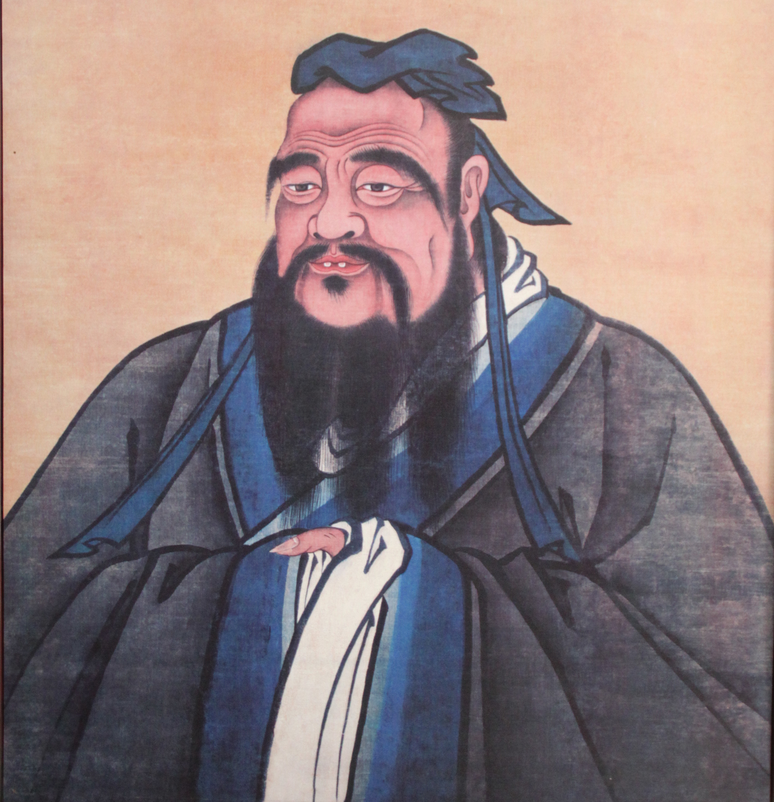
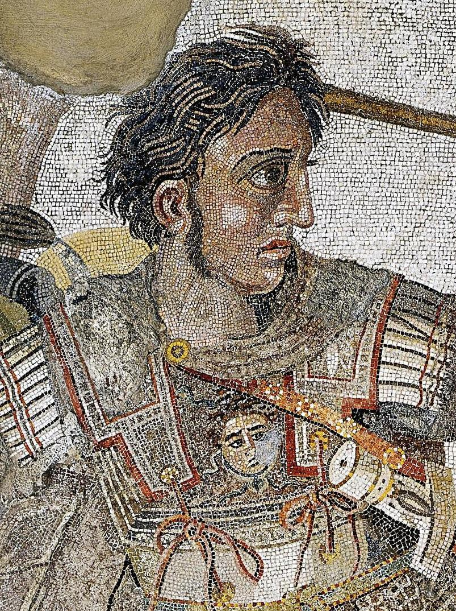
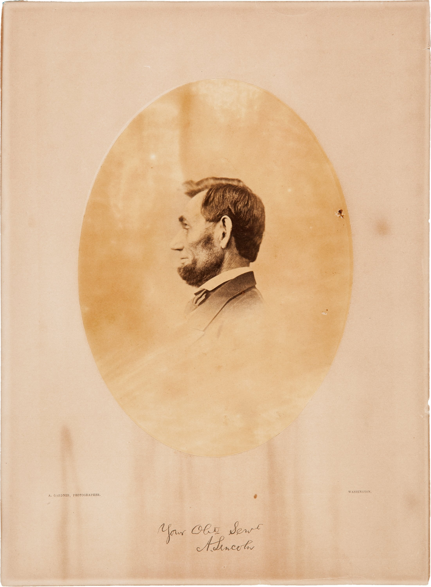
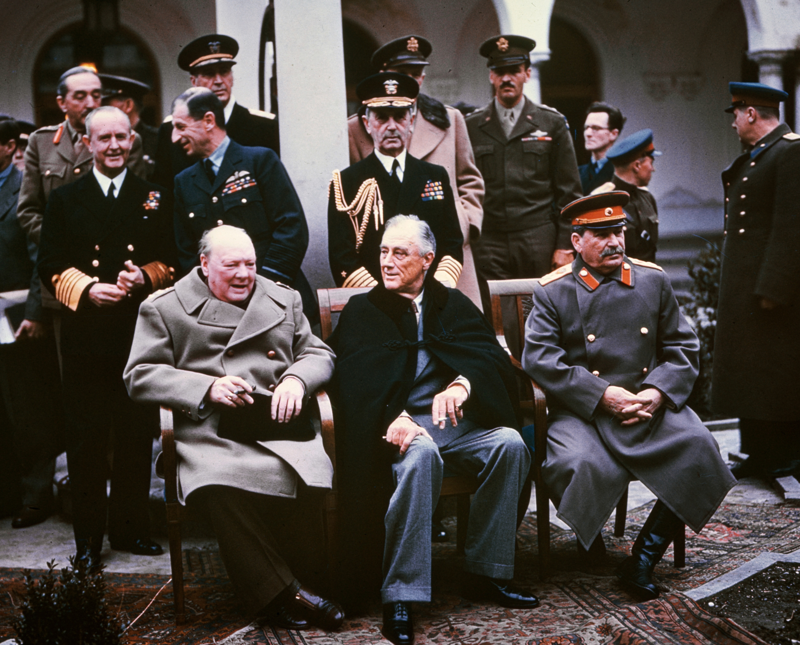
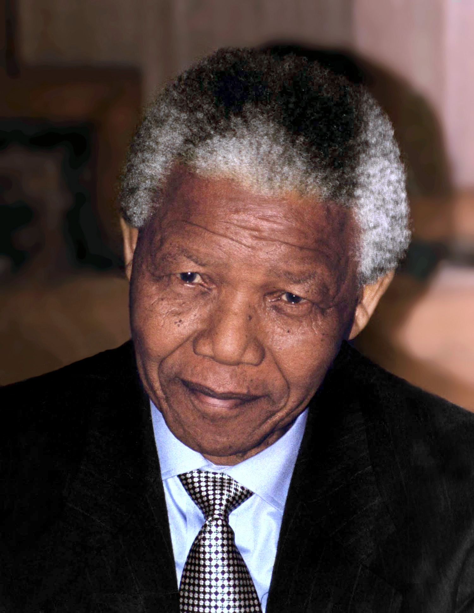
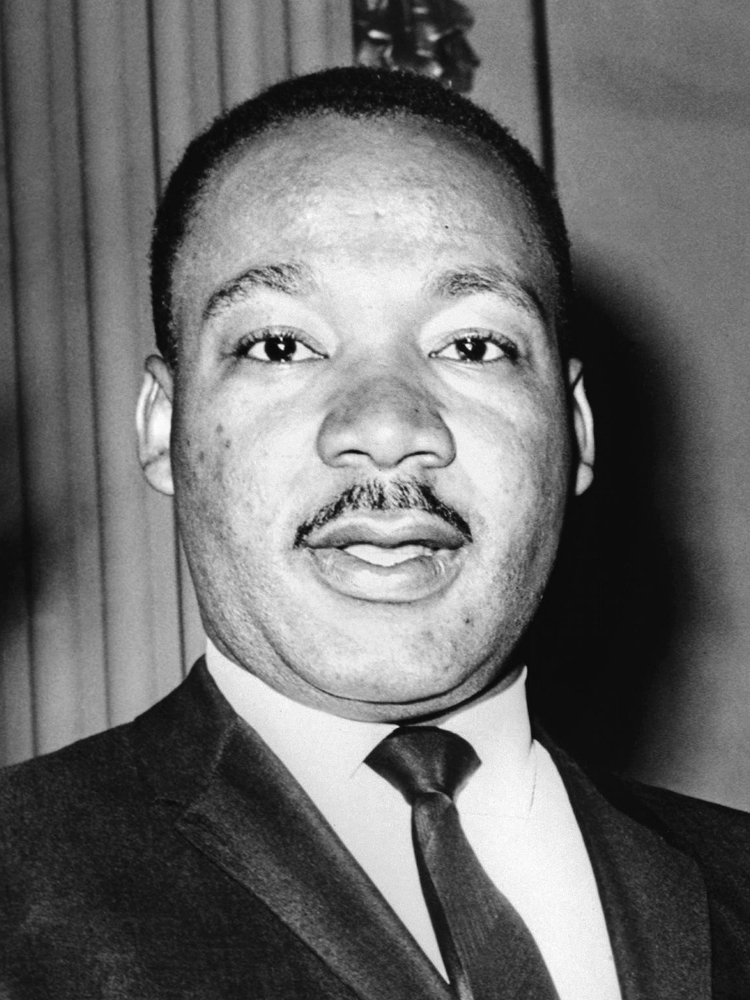

Confucio
Formativo
“Intenta esto”
Quién fue
Maestro y filósofo chino nacido en Qufu. Enseñaba sin distinguir la clase social de sus alumnos, y sus ideas se recogieron después en los Analectas.Por qué encaja
Su método era formar personas a largo plazo, para que desarrollaran virtud y criterio al servir en el gobierno. Es el estilo que desarrolla a las personas para el futuro.
Alejandro Magno
Ejemplar
“Haz como yo, ahora”
Quién fue
Rey de Macedonia a los 20 años, tras el asesinato de su padre Filipo II. En pocos años derrotó al Imperio persa y llegó hasta el noroeste de la India. Murió a los 32 en Babilonia.Por qué encaja
Peleaba al frente de su caballería, en las mismas batallas que exigía a sus tropas. Fijaba un estándar altísimo con su propio ejemplo, como el estilo que fija altos estándares para el desempeño.
Abraham Lincoln
Democrático
“¿Qué piensas tú?”
Quién fue
16.º presidente de Estados Unidos (1861-1865). Condujo al país durante la Guerra de Secesión y firmó la Proclamación de Emancipación en 1863.Por qué encaja
Incluyó en su gabinete a antiguos rivales políticos y pedía opiniones distintas antes de decidir. Buscaba consenso con la participación de otros, lo propio del estilo democrático.
Iósif Stalin
Coercitivo
“Haz lo que te digo”
Quién fue
Concentró el poder en la Unión Soviética desde los años veinte y la dirigió hasta su muerte en 1953. Impuso planes quinquenales de industrialización desde 1928 y la Gran Purga de 1936 a 1938.Por qué encaja
Exigía obediencia inmediata y castigaba la desobediencia con miedo y represión. Es el estilo que exige cumplimiento inmediato, con el impacto negativo que trae al clima.
Nelson Mandela
Afiliativo
“Las personas son lo primero”
Quién fue
Pasó 27 años preso por luchar contra el apartheid. Fue presidente de Sudáfrica de 1994 a 1999, el primero elegido con el voto de todas las razas.Por qué encaja
Al salir buscó unir a un país dividido en lugar de cobrar venganza. Puso primero las relaciones y la reconciliación, como el estilo que crea armonía y construye lazos emocionales.
Martin Luther King Jr.
Orientativo
“Ven conmigo”
Quién fue
Pastor y líder del movimiento por los derechos civiles. Pronunció “Tengo un sueño” en Washington en 1963 y recibió el Nobel de la Paz en 1964.Por qué encaja
Dio a cientos de miles de personas una visión clara, la igualdad, y las movilizó hacia ella con marchas pacíficas. Es el estilo que moviliza a las personas hacia una visión.